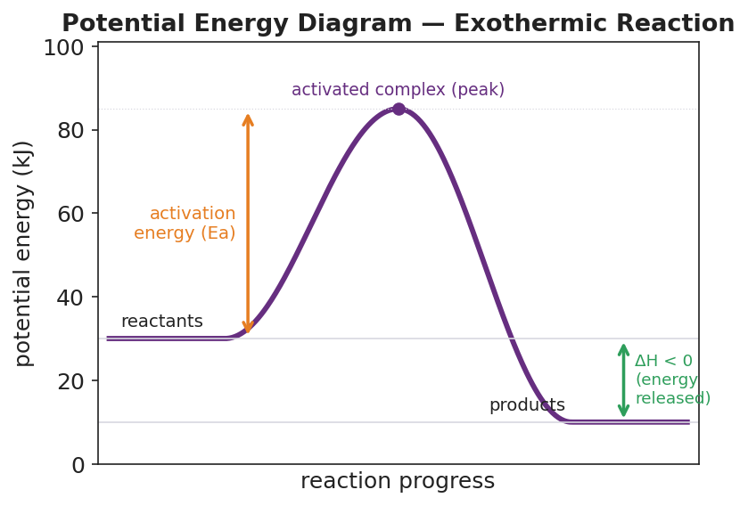

01 Phenomenon
Gasoline burning releases a huge amount of energy — it powers cars, generators, and lawnmowers. A small dish of gasoline sits in the open air, surrounded by all the oxygen it needs. Yet it does not burst into flame on its own. It sits there, perfectly calm, until a single spark touches it — and then it releases all that energy at once.
02 Driving question
If burning gasoline releases energy, why won't it start until you give it a spark?
03 Notice & wonder
| I notice… | I wonder… |
|---|---|
Turn & Talk #1: A reaction can end up at a lower energy than it started — it gives energy off — and still need an energy push to begin. If you drew the energy “path” from start to finish, would it be a straight slide downhill, or would it do something else first? Describe the shape in one sentence.
04 Initial model
Before your teacher names anything, build the energy path on your group’s whiteboard, then copy it here. Use these three facts:
- The starting mixture (reactants) sits at 30 kJ.
- Partway through, the system reaches a high point of 85 kJ.
- The finished mixture (products) settles at 10 kJ.
Plot the three points in order on the axes below and connect them into a smooth path.
potential
energy (kJ)
85 |
|
30 |
|
10 |
+-------------------------------
reaction progress →Sketch your curve above (or on your group board and copy it here).
What do you think the high point in the middle means physically?
- Did your curve start at zero on the energy axis? Did it have to? _______________
05 Investigate
Part 1 — BTC build: the energy path (at your whiteboard)
With your group at the whiteboard, draw the curve from the three values above. Then answer together:
- The finish (10 kJ) is lower than the start (30 kJ). The system ended with less stored energy than it began with. Where did that energy go?
- Point to the highest spot on your curve. Bonds there are half-broken and half-formed. What would you call the thing that exists for an instant at that peak?
Part 2 — BTC build: add the catalyst path
Now a chemist runs the same reaction but adds a catalyst (a substance that speeds it up). With the catalyst:
- The reactants still start at 30 kJ.
- The products still finish at 10 kJ.
- But the high point in the middle is only 60 kJ instead of 85 kJ.
Add this second path to your board in a different color, then answer:
What changed between the two paths? _______________________________________________
What stayed exactly the same? _______________________________________________
Did the catalyst change how much energy the reaction releases overall? Defend your answer.
Part 3 — Reading the labeled diagram
Look at figures/pe_diagram_exothermic.png:

The reactants are at ____ kJ and the products are at ____ kJ.
The activated complex (peak) is at ____ kJ.
The activation energy is measured from the reactant level up to the peak. Ea = ____ − ____ = ____ kJ.
Is this reaction exothermic or endothermic? How can you tell just from the picture? _______________________________________________
06 Make it make sense
Use the labeled diagram values (reactants 30 kJ, peak 85 kJ, products 10 kJ; catalyzed peak 60 kJ) to answer each item. Show your subtraction.
1. Find the activation energy (Ea) of the uncatalyzed reaction (peak 85 kJ).
Ea = peak − reactants = ____ − ____ = ____ kJ
2. Find ΔH for the reaction. Is it positive or negative, and what does that sign tell you?
ΔH = products − reactants = ____ − ____ = ____ kJ The reaction is ______________ because the products are ______________ than the reactants.
3. Find the activation energy of the catalyzed reaction (peak 60 kJ). How much did the catalyst lower Ea?
Catalyzed Ea = ____ − ____ = ____ kJ The catalyst lowered Ea by ____ − ____ = ____ kJ. Did ΔH change when the catalyst was added? ______________
07 Key vocabulary
- potential energy diagram
- a graph of the potential energy stored in a chemical system (vertical axis) versus reaction progress (horizontal axis); it shows the reactant level, the product level, the activation-energy barrier, and ΔH; the energy axis is a *relative* scale, so the reference level need not be zero
- activation energy (Ea)
- the minimum energy that colliding reactant molecules must have to react; on a PE diagram it is the height of the barrier measured from the reactant level up to the peak; a catalyst lowers it, and a spark or heat can supply it
- activated complex
- the unstable, high-energy arrangement of atoms that exists for an instant at the peak of the diagram, with bonds partly broken and partly formed; it immediately falls forward to products or back to reactants and is never isolated as a stable substance
Use each term in a sentence about today’s investigation. Do not copy the definition — describe something you actually drew, observed, or argued about at the board.
potential energy diagram: _______________________________________________ _______________________________________________
activation energy (Ea): _______________________________________________ _______________________________________________
activated complex: _______________________________________________ _______________________________________________
08 Revise your model
Return to your Initial Model curve. Add labels:
Label the flat left side reactants and the flat right side products.
Draw an arrow from the reactant level up to the peak. Label it activation energy (Ea).
Draw an arrow from the reactant level down to the product level. Label it ΔH. Is it pointing down (exothermic) or up (endothermic)? ______________
Mark the peak with a dot and label it activated complex.
Then finish this Because / But / So sentence:
Gasoline does not catch fire on its own at room temperature because __________________________________________, but __________________________________________, so __________________________________________.
09 Exit ticket
A different reaction has reactants at 20 kJ, an activated complex (peak) at 70 kJ, and products at 50 kJ.
(a) What is the activation energy (Ea) of this reaction? Show how you found it.
Ea = peak − reactants = ____ − ____ = ____ kJ
(b) What is ΔH, and is the reaction exothermic or endothermic? How do you know from the energy levels?
ΔH = products − reactants = ____ − ____ = ____ kJ The reaction is ______________ because _______________________________________________
(c) In one sentence, explain why adding a catalyst would speed this reaction up without changing its ΔH.
10 Explore further
- PE-diagram drawing practice: Students sketch and label a complete PE diagram from a short data set (energy of reactants, energy of products, peak energy). They mark reactants, products, the activated complex, the activation energy (Ea), and ΔH, then decide whether the reaction is exothermic or endothermic. Use the brand figure `figures/pe_diagram_exothermic.png` as the model. No external URL required.
- Catalyst-effect investigation: Students compare two pathways for the *same* reaction — one with a catalyst, one without — using `figures/pe_diagram_catalyst.png`. They identify what changes (the activation-energy barrier) and what stays exactly the same (reactant level, product level, ΔH). For a digital option, the Javalab "Reaction Energy / Activation Energy" simulation lets students drag the catalyst in and watch the barrier shrink while the start and end levels hold.
- Spark demo (teacher-run, safe version): A piezo lighter clicked over a small candle, or a "whoosh bottle" video, makes the activation-energy idea physical: nothing happens until the spark adds energy, then the exothermic release sustains itself.